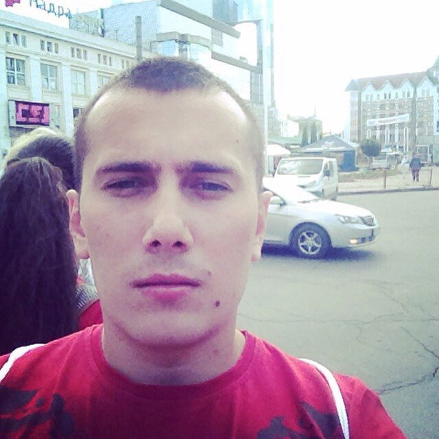

| Дата рождения: | 28 янв 1990 (26 лет) |  |
| Регион: | Киев | |
| Телефон(ы): | +380986549653 | |
| E-mail: | ivanprimak24@gmail.com |
Получение должности PHP/WEB-разработчика (WEB-Программиста, WEB-Мастера) в стабильной компании с возможностью профессионального развития и участия в разработке интересных проектов
Начальный уровень:
Готов учиться и быстро находить решение поставленных задач. Опыт небольшой, однако желания познать необходимое в короткие сроки много. При рассмотрении кандидатуры готов выполнить тестовое задание.
Web-мастер/разработчик
апр 2015 - настоящее время (1 год 4 мес)
Фриланс (IT - разработка ПО)
Путивльский колледж СНАУ
Год окончания: 2009
Коммерческая деятельность, Младший специалист
Английский - ниже среднего
Украинский- родной
Могу проходить собеседование на этом языке
Русский- свободно
Могу проходить собеседование на этом языке
Личные качества
Предпочтительное направление развития - в PHP разработке.